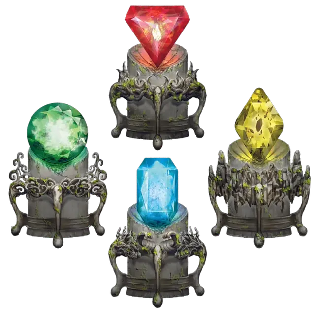

Камень элементаля
Elemental Gem
Чудесный предмет, необычный

Рекомендованная стоимость 51-250 зм
Этот камень содержит частичку стихийной энергии. Если вы действием разбиваете камень, призывается элементаль, как если бы вы наложили заклинание призыв элементаля [conjure elemental], и магия, заключённая в камне, исчезает. Вид камня определяет вид призываемого элементаля.
| Камень | Призываемый элементаль |
| Изумруд | водяной элементаль [water elemental] |
| Синий сапфир | воздушный элементаль [air elemental] |
| Жёлтый бриллиант | земляной элементаль [earth elemental] |
| Красный корунд | огненный элементаль [fire elemental] |